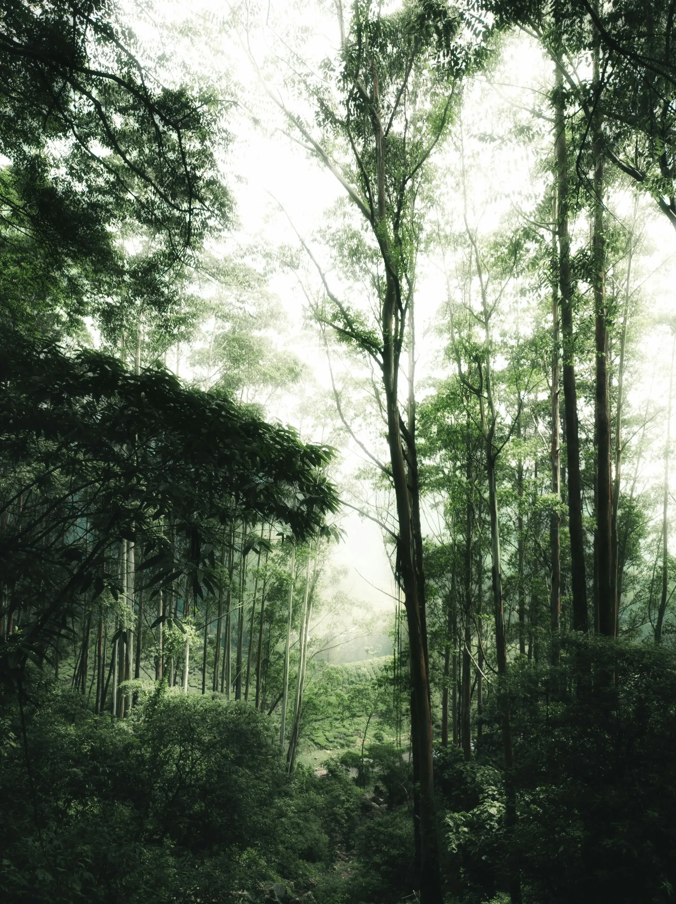
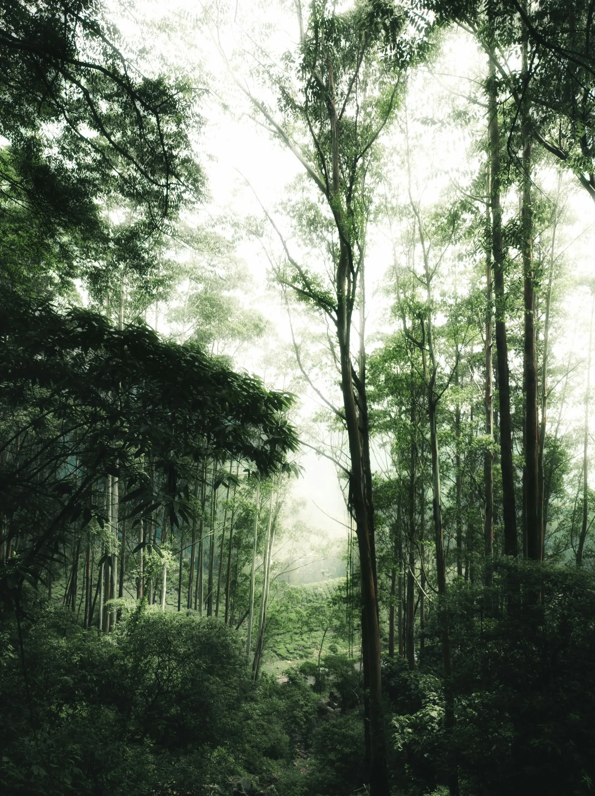
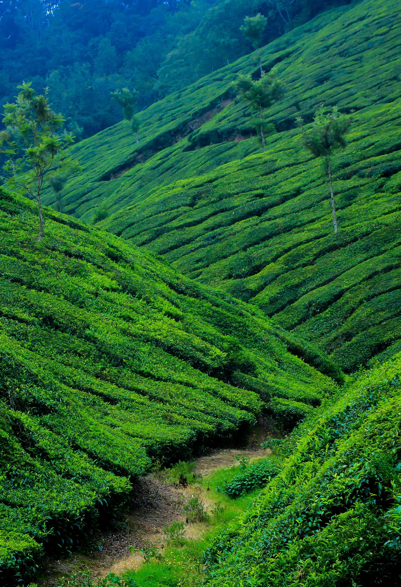
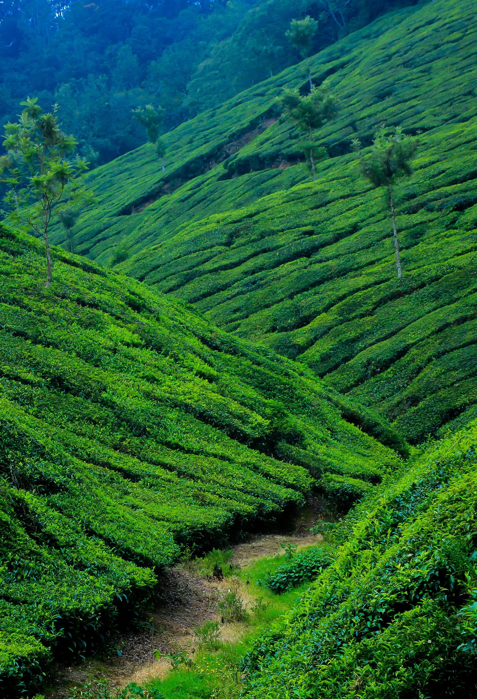

Venue: College of Agriculture, Vellayani, Thiruvananthapuram, Kerala, India
An international conference on Community Agrobiodiversity Management in Kerala.
Register Now
About The Kerala Agrobiodiversity Conference
The Kerala Agrobiodiversity Conference -2025 (KAbCon-2025), an international Conference on Community Agrobiodiversity Management in Kerala invites researchers, policymakers, farmers, indigenous leaders, development professionals, and sustainability advocates from around the world to engage in a collaborative dialogue on the integration of traditional wisdom and modern innovations for climate-resilient food systems in biodiversity hotspots.
Jointly organized by the Kerala State Biodiversity Board (KSBB) and Kerala Agricultural University, College of Agriculture, Vellayani, this conference is part of the 70th anniversary celebrations of the College and KSBB’s 20-year experience in biodiversity conservation. It also commemorates the 80th anniversary of FAO and World Food Day 2025, and the Centenary Year of Prof. M. S. Swaminathan.
This conference aims to contribute to key international goals including SDG 2 (Zero Hunger), SDG 13 (Climate Action), SDG 15 (Life on Land), and KMGBF Targets 4, 8, and 10.
 

 

The Conference Objectives
Key Themes
Expected Participants
The International Conference on Community Agrobiodiversity Management (KAbCon 2025) will take place from October 16–18, 2025 at the College of Agriculture, Vellayani, Kerala, India. Stay tuned for an inspiring event bringing together farmers, researchers, and policymakers.
Seminar Important Dates
Click on a highlighted date in the calendar to see details here.
- Step 1
- Step 2
- Step 3
- Step 4
- Step 5
Create an Account
Click on the "Register" button and create your profile with basic details.
Verify Email
Check your inbox for a verification email and confirm your registration.
Fill Application Form
Provide your academic details and select the program or event you want to join.
Make Payment
Complete the registration by making a secure online payment.
Confirmation
Receive a confirmation email and get ready to participate!